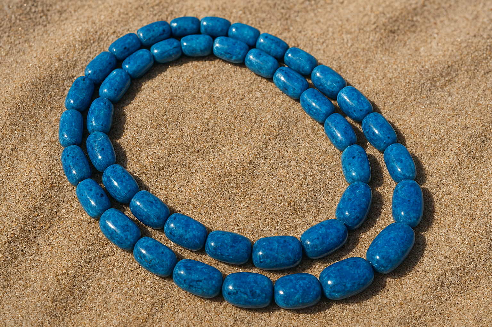

Jewelry Box
Egyptian motif covered bronze jewelry box. Inspired by jewelry boxes discovered in noble female tombs.
$12.99
Bronze Mirror
Replica bronze mirror discovered among cosmetic items within burial assemblages.
$22.99

Faience Necklace
Bright turquoise faience beads in a traditional necklace pattern.
$29.99

Scarab Gem Replica
Inspired by scarabs gems found in jewelry boxes in noble burial tombs.This replica is made of jade and the scarab symbolizes rebirth.
$19.99